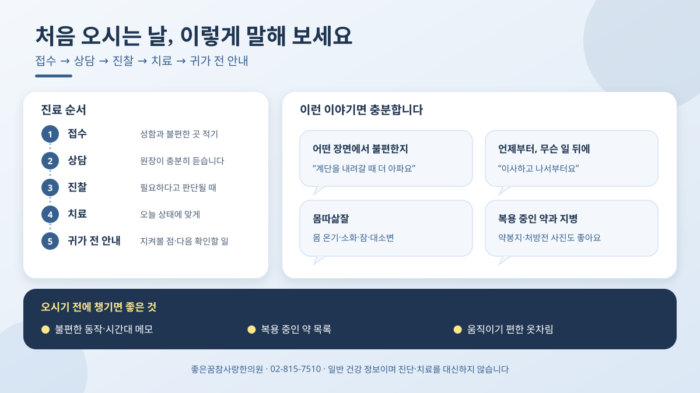

이종호 한의사 감수좋은꿈참사랑한의원 대표원장 (한의사 면허번호 19769)발행 2026-11-22 · 수정 2026-11-26
이 글의 차례
예약을 잡아 놓고도 전날 밤 문득 이런 생각이 듭니다. 가서 뭐라고 말하지? 허리가 아파서 가는 건 맞는데, 사실 요즘 잠도 잘 못 자고 속도 더부룩합니다. 이걸 다 말해도 되는 걸까요. 진료실에 들어가면 긴장해서 하고 싶던 말을 반도 못 하고 나올 것 같기도 합니다. 처음 가는 곳은 누구에게나 조금 낯설고 부담스럽지요.
진료실에서 이런 말씀을 자주 듣습니다. "한의원은 처음이라서요." "이런 것까지 말씀드려도 되나 싶어서요." 저는 그런 말씀이 오히려 반갑습니다. 망설이다가 시간을 내어 오신 걸음이라는 걸 알기 때문입니다. 아픈 걸 한참 참다가 오셨을 수도 있고, 이 정도로 가도 되나 몇 번을 고민하셨을 수도 있습니다. 그 마음까지 헤아리며 이야기를 듣겠습니다.
좋은꿈참사랑한의원의 첫 방문은 접수, 상담, 진찰, 치료, 귀가 전 안내 순서로 진행됩니다. 처음이라 무엇을 말해야 할지 막막해도 괜찮습니다. 일상에서 불편한 장면을 편하게 말씀해 주시면 그 이야기에서 시작합니다. 다만 갑자기 생긴 심한 가슴 통증이나 한쪽 팔다리의 힘 빠짐처럼 급한 신호가 있다면, 한의원보다 가까운 응급실이 먼저입니다.
첫 방문은 이런 순서로 진행됩니다
처음 오시면 데스크에서 접수를 합니다. 성함과 불편한 곳을 간단히 적어 주시면 됩니다. 길게 쓰지 않으셔도 괜찮습니다. 자세한 이야기는 진료실에서 제가 여쭙겠습니다.
다음은 상담입니다. 원장이 이야기를 충분히 듣는 시간입니다. 언제부터 어떤 장면에서 불편한지, 생활은 어떤지 천천히 여쭙습니다. 이어서 진찰을 합니다. 모든 분께 맥을 짚고, 필요하다고 판단될 때 다른 방법을 더해 살핍니다.
그다음 오늘 상태에 맞는 치료를 진행합니다. 무엇을 왜 하는지는 시작하기 전에 먼저 말씀드립니다. 침을 맞는 동안에는 느껴지는 감각을 그대로 말씀해 주시면 됩니다. 묵직하거나 뻐근한 느낌이 드는지, 혹시 아프거나 불편한 곳은 없는지 알려 주시면 그에 맞춰 조절합니다.
치료를 마친 뒤에 맥을 다시 짚기도 하는데, 그날 몸이 어떻게 반응했는지 확인하기 위해서입니다. 마지막으로 귀가 전에 집에서 지켜볼 점과 다음에 확인할 일을 알려 드립니다.
처음 오시는 날은 상담과 진찰에 시간이 들어 다시 오실 때보다 오래 걸릴 수 있습니다. 일정에 여유를 두고 오시면 서두르지 않고 이야기를 나눌 수 있습니다.
왜 이렇게 자세히 여쭙나요
처음 오신 분 가운데는 허리가 아파서 왔는데 왜 잠과 소화까지 묻느냐며 의아해하시는 분이 있습니다. 같은 허리 통증이라도 앉을 때 아픈지, 일어설 때 아픈지에 따라 살필 곳이 달라집니다.
아픈 곳과 상관없어 보이는 잠, 소화, 대소변이 함께 흔들리는 경우도 많아서, 생활 전체를 알아야 이해가 쉬워집니다. 잠을 못 자면 같은 통증도 더 크게 느끼고, 긴장이 풀리지 않으면 소화도 무거워지거든요.
복용 중인 약과 지병을 여쭙는 것은 안전 때문입니다. 그것을 알아야 침이든 한약이든 무엇을 조심해야 할지 미리 살필 수 있습니다. 그리고 처음에 자세히 들어 두면, 다음 진료부터는 달라진 점만 이어서 확인할 수 있습니다. 처음 한 번의 긴 이야기가 그다음 진료들을 가볍게 만들어 줍니다.
말씀이 두서없어도 괜찮습니다. 이야기가 옆길로 새는 것 같아도, 그 옆길에서 뜻밖의 단서가 나오는 경우가 많습니다.
그래서 저는 이런 것들을 여쭙습니다. 어떤 장면에서 가장 불편한지. 예를 들어 계단을 오를 때와 내려갈 때 가운데 언제 더 불편한지처럼요. 언제부터, 어떤 계기 뒤에 시작되었는지. 몸은 따뜻한지, 소화는 편한지, 잠은 잘 자는지, 대소변은 어떤지. 복용 중인 약과 지병, 최근 받은 검사가 있는지.
그리고 이번 진료로 일상에서 무엇이 달라지길 바라시는지도 꼭 여쭙니다. 그 대답이 우리가 함께 갈 방향이 되기 때문입니다.
진맥, 설진, 초음파는 언제 하나요?
진맥은 모든 분께 합니다. 맥으로 몸의 전체적인 기운과 상태를 살핍니다. 양손을 올려 봐 달라고 말씀드리면 팔을 편하게 내려놓고 숨을 고르게 쉬시면 됩니다.
저는 손목 안쪽 맥이 뛰는 세 자리에 손가락을 얹고, 가볍게 댈 때와 조금 눌렀을 때, 깊이 눌렀을 때를 나누어 봅니다. 왼손과 오른손을 번갈아 짚으며 양쪽이 고른지도 살핍니다. 한동안 말없이 짚고 있더라도 걱정하지 마세요. 그 작은 차이를 느끼는 데 시간이 조금 걸릴 뿐입니다.
설진, 곧 혀를 보는 것은 소화나 열감처럼 몸속 상태의 단서를 살필 때 합니다. 배를 살피는 복진은 편히 누우신 상태에서 배를 가볍게 눌러 단단하거나 아픈 곳이 있는지 보는 진찰입니다.
초음파는 아픈 부위의 조직 상태를 눈으로 확인할 필요가 있을 때 씁니다. 체중이나 혈당 관리가 함께 궁금한 분은 필요에 따라 인바디 770 측정이나 당화혈색소 검사를 참고하기도 합니다.
진맥 말고 다른 진찰은 모든 분이 같게 받지는 않습니다. 말씀해 주신 증상에 따라 필요한 것만 합니다. 검사를 많이 한다고 좋은 진료가 되는 것은 아니라고 생각합니다. 지금 이분께 필요한 것을 고르는 일이 먼저입니다.
이런 분들을 자주 뵙습니다
통증과 잠, 소화가 한꺼번에 불편한 분들이 많습니다. 무엇부터 말해야 할지 모르겠다고 하시지요. 이럴 때는 가장 힘든 것 하나와 그다음 것을 순서대로 적어 오시면 됩니다. 첫 진료에서 무엇부터 살필지 함께 정하기가 훨씬 쉬워집니다.
부모님을 모시고 처음 오시는 분들도 자주 뵙습니다. 드시는 약 봉투나 처방전 사진, 최근 검진 결과지를 챙겨 오시면 큰 도움이 됩니다. 부모님께서 평소 생활에서 달라진 점을 다 말씀하지 못하실 때가 많아서, 곁에서 지켜본 보호자분의 이야기도 함께 듣습니다.
평일 낮에는 시간을 내기 어려운 직장인과 학생들도 많이 오십니다. 평일에는 저녁 8시까지, 토·일·공휴일에는 오후 3시까지 진료하니 그 시간에 맞춰 예약하시면 됩니다. 접수 가능한 시간은 방문 전 전화로 확인해 주세요.
다른 병원 검사에서 큰 이상은 없다고 들었는데 불편이 이어진다는 분도 계십니다. 검사 결과는 결과대로 소중한 자료입니다. 결과지를 가져오시면 참고해서, 생활과 몸의 상태를 함께 살핍니다. 지병이 있어 한약이나 치료가 걱정되는 분이라면 복용 중인 약을 먼저 확인하고 방법을 정합니다.
오시기 전에 챙겨 두면 좋은 것
불편한 동작이나 시간대를 휴대폰 메모에 한두 줄만 적어 두세요. 복용 중인 약은 약봉지나 처방전 사진으로 챙기시면 됩니다. 옷은 움직임을 보기 편한 차림이 좋습니다. 방문 시간은 네이버 예약이나 전화(02-815-7510)로 미리 정해 두시면 기다리는 시간을 줄일 수 있습니다.
예약 시간보다 10분쯤 일찍 도착해 숨을 고르시길 권합니다. 뛰어온 직후에는 맥이 평소와 다르게 느껴질 수 있거든요. 진료 직전에는 커피나 색이 진한 음료, 사탕도 잠시 피해 주세요. 혀 색을 살필 때 헷갈릴 수 있습니다.
최근 검진 결과나 다른 병원 검사 자료가 있다면 함께 가져오세요. 예전에 한약을 드신 적이 있다면 그때 받은 한약 봉투나 처방 메모도 참고가 됩니다.
임신 중이거나 임신 가능성이 있다면 진료 전에 꼭 알려 주시고, 예약한 날 열이 나거나 감기 기운이 심하다면 오시기 전에 전화로 먼저 상의해 주세요.
오시기 전에 스스로 한번 점검해 보셔도 좋겠습니다. 가장 불편한 장면을 한 문장으로 말할 수 있는지. 언제부터, 어떤 계기 뒤에 시작됐는지 대략 떠올릴 수 있는지. 복용 중인 약과 영양제를 사진이나 메모로 챙겼는지. 최근 받은 검사 결과지가 있다면 챙겼는지.
몸 쪽으로는 잠, 소화, 대소변, 손발의 온기 가운데 요즘 달라진 것이 있는지, 그리고 이번 진료로 일상에서 무엇이 달라지길 바라는지 떠올려 보세요. 모두 준비되지 않아도 괜찮습니다. 진료실에서 하나씩 여쭤보며 함께 정리합니다.
오시는 길과 진료 시간
한의원은 서울 동작구 만양로2길 2 신성빌딩 3층·5층(상도동)에 있습니다. 상도역 3번 출구로 나와 약 200m 직진한 뒤, 오거리에서 우회전해 약 200m 걸어오시면 됩니다. 노량진역(1·9호선)에서 오신다면 3번 출구에서 마을버스 동작01을 타고 신동아리버파크에서 내리시면 됩니다.
진료시간은 평일 09:30~20:00(점심 13:00~14:00), 토·일·공휴일 09:30~15:00(점심시간 없음)입니다. 예약은 네이버 예약이나 전화 02-815-7510으로 하실 수 있고, 주차는 방문 전 전화로 확인해 주세요.
얼마나 지켜보고, 언제 진료를 받을까요
무리한 다음 날 생긴 가벼운 뻐근함이나 하루 이틀 과식한 뒤의 더부룩함이라면 생활을 조절하며 며칠 지켜볼 수 있습니다. 2주가 지나도 비슷하거나, 덜했다 심했다를 몇 주째 되풀이한다면 상담을 받아 보세요. 잠을 설치거나 일과 공부에 지장이 생길 만큼 불편하다면 기다리지 마시고요.
다음과 같은 경우에는 한의원 방문을 미루고 응급실 진료를 먼저 받으세요.
- 갑자기 생긴 심한 가슴 통증, 숨 가쁨, 한쪽 팔다리의 힘 빠짐이나 말이 어눌해지는 증상
- 넘어지거나 사고가 난 뒤 심하게 붓고 움직일 수 없는 경우
- 고열과 함께 의식이 흐려지는 경우
이런 신호가 있다면 기다리지 말고 가까운 응급실에서 바로 확인을 받으세요. 마음이 많이 힘들어 혼자 견디기 어려울 때는 ☎ 109로 바로 전화해 이야기를 나눌 수 있습니다. 복용 중인 약은 처방한 의사와 상의 없이 줄이거나 끊지 않습니다.
진료를 마치고, 다시 오실 때
통증, 소화, 잠, 피로처럼 불편이 여러 개일 때는 우선순위를 함께 정합니다. 한 번에 모든 것을 다루려 하기보다, 지금 가장 힘든 것부터 차례를 정하는 편이 몸에도 마음에도 덜 부담스럽습니다.
치료 방법은 모든 분께 짚는 맥과 상담에서 들은 이야기를 함께 놓고 정합니다. 그날 상태에 따라 침·약침·추나를 하기도 하고, 한약 상담을 함께 하기도 합니다.
얼마나 자주, 얼마 동안 오셔야 하는지도 처음에 대략 말씀드립니다. 갑자기 다친 통증은 처음에 가까운 간격으로 오시다가 차츰 간격을 넓혀 가는 경우가 많고, 오래된 불편이나 자세와 관련된 불편은 시간이 걸릴 수 있습니다.
미리 알고 계시면 일정을 세우기도 쉽고, 기대만큼 빨리 달라지지 않는 날에도 덜 불안하십니다. 중간중간 흐름을 다시 확인해 계획을 조정합니다.
다시 오시면 지난 치료 뒤 일상에서 달라진 점이 하나라도 있었는지부터 여쭙습니다. 그러니 처음부터 다시 설명하지 않으셔도 됩니다.
좋은꿈참사랑한의원에는 이종호 대표원장과 조영기 원장, 정원영 원장이 함께 진료합니다. 일정에 따라 담당 원장이 바뀌는 날에도 이전 진료 기록을 함께 보고 이어서 진료합니다. 지난번 이야기를 기억하고 이어 가는 것, 저는 그것이 다시 오시는 진료의 가장 큰 의미라고 생각합니다.
마치며
처음 한의원 문을 여는 일은 생각보다 큰 결심이 필요합니다. 아픈 걸 참고 참다가, 혹은 이런 걸로 가도 되나 망설이다가 오시는 분이 많습니다. 준비가 덜 됐어도, 말이 잘 정리되지 않아도 괜찮습니다. 메모 한 줄이면 충분하고, 그 한 줄도 없으면 진료실에서 같이 찾으면 됩니다.
처음 뵙는 날에는 지금 가장 불편한 장면 하나를 들려주세요. 그리고 다음에 오시면 지난 진료 뒤 일상에서 달라진 점 하나부터 여쭙겠습니다.
함께 읽으면 좋은 글
- 한의원 초진 때는 어떤 질문을 받나요?
- 한의원 가기 전에 복용 약 목록은 어떻게 정리하면 좋나요?
- 한의원에서 손목 맥을 짚는 진맥은 무엇인가요?

첫 방문은 이런 순서로 진행됩니다
- 처음 오시면 데스크에서 접수를 합니다.
- 성함과 불편한 곳을 간단히 적어 주시면 됩니다.
왜 이렇게 자세히 여쭙나요
- 처음 오신 분 가운데는 허리가 아파서 왔는데 왜 잠과 소화까지 묻느냐며 의아해하시는…
- 같은 허리 통증이라도 앉을 때 아픈지, 일어설 때 아픈지에 따라 살필 곳이 달라집니다.
진맥, 설진, 초음파는 언제 하나요?
- 진맥은 모든 분께 합니다.
- 맥으로 몸의 전체적인 기운과 상태를 살핍니다.
이런 분들을 자주 뵙습니다
- 통증과 잠, 소화가 한꺼번에 불편한 분들이 많습니다.
- 무엇부터 말해야 할지 모르겠다고 하시지요.
자주 묻는 질문
처음 가면 어떤 순서로 진료하나요?
접수, 상담, 진찰, 치료, 귀가 전 안내 순서로 진행합니다.
모든 환자가 같은 검사를 받나요?
아니요. 진맥은 모든 분께 하고, 설진·초음파 등은 말씀해 주신 증상에 따라 필요하다고 판단될 때만 합니다.
진료시간은 어떻게 되나요?
평일 09:30~20:00(점심 13:00~14:00), 토·일·공휴일 09:30~15:00(점심시간 없음)입니다. 방문 전 네이버 예약이나 02-815-7510으로 확인해 주세요.
다시 방문하면 처음부터 다시 설명해야 하나요?
아니요. 지난번 상담 내용을 이어서 여쭙고, 달라진 점부터 확인합니다.
처음 가는 날은 시간이 얼마나 걸리나요?
상담과 진찰 시간이 있어 다시 오실 때보다 오래 걸릴 수 있습니다. 시간 여유를 두고 오시고, 자세한 소요 시간은 방문 전 전화로 확인해 주세요.
좋은꿈참사랑한의원은 재진 때 지난번 이야기부터 이어서 여쭙니다. 진료시간과 예약은 오시는 길에서 확인하세요.
어디서 상담받을 수 있나요?
좋은꿈참사랑한의원은 서울 동작구 만양로2길 2 신성빌딩 3층·5층(서울 동작구 상도동, 7호선 상도역 3번 출구 근처)에 있습니다. 한의사 3명(이종호 대표원장, 조영기 수석진료원장, 정원영 진료원장)이 진료합니다. 진료시간은 평일 09:30~20:00(점심 13:00~14:00), 토·일·공휴일 09:30~15:00이며, 방문 전 전화로 확인을 권합니다. 예약은 네이버 예약, 카카오톡 상담, 전화 02-815-7510로 받습니다.
이 글은 일반적인 건강 정보이며 개인의 진단이나 치료를 대신하지 않습니다. 증상이 있거나 복용 중인 약이 있다면 진료를 통해 확인하세요. 치료 효과는 개인마다 다를 수 있습니다.
작성 기준: 일반적으로 알려져 있는 건강 정보를 참고해 정리했습니다(대표원장 감수). 증상 기록은 1~2주 동안 하루 1회, 비슷한 시간에 적어 오시면 지난 상태와 비교하기 쉽습니다.